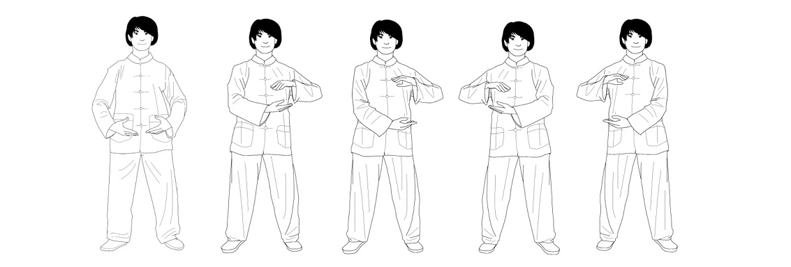

1. Starting from Earth posture, bring your hands level with your heart as you inhale, with one hand slightly above the other and your palms facing each other.
2. Rotate your hands to feel the energy of your heart.
3. Turn from your waist gently to the left, keeping your torso relaxed and your forearms parallel to the ground.
4. With your palms still facing each other, separate your hands, bringing one up until it is level with your shoulder, and the other down in front of your abdomen.
5. Turn from your waist gently to the right, keeping your torso relaxed and your forearms parallel to the ground.
6. As you exhale, let your hands come back together in front of your heart.
7. With your palms still facing each other, separate your hands, bringing one up until it is level with your shoulder, and the other down in front of your abdomen.
